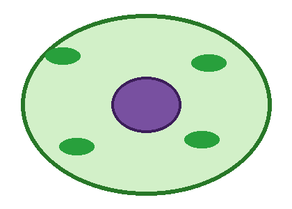

Plant and Animal Cells — Quiz
Name: ______________ Class: ______
Section A: Choose the correct answer
1. Look at the cell below. Which structure is labelled X?

a) Nucleus
b) Chloroplast
c) Vacuole
d) Cell wall
2. Which organelle releases energy in respiration?
a) Ribosome b) Mitochondrion c) Nucleus d) Vacuole
Use the graph to answer questions 3-4.
3. At what temperature does the rate first reach its maximum? (2 marks)
4. Describe how the rate changes as temperature increases.
Section B: True or False
5. All cells have a nucleus. ( )
6. Plant cells have a cell wall. ( )
Section C: Fill in the blanks
7. Photosynthesis takes place in the ________.
Section D: The diagram shows a food chain.
8. Which organism is the producer?
Section E: Match column A with column B
| 1. Nucleus | a. Makes proteins |
| 2. Ribosome | b. Controls the cell |
| 3. Chloroplast | c. Photosynthesis |
Answer key
1. B 2. B
3. 50 °C
4. The rate increases quickly then levels off at a maximum.
5. False 6. True
7. chloroplast
8. Grass
Match: 1-b 2-a 3-c